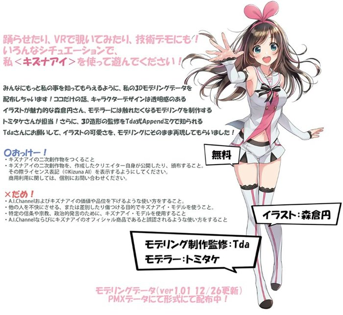

不仅是围棋，人类连卖萌都不如AI了？！
BY 陶佳欣
如今一说到“人工智能”，不少人马上就会想到那个打败诸多职业高手，威震围棋界的“AlphaGo”了吧。这几天，AlphaGo与柯洁的世纪大战也是聚焦了无数的目光，让人工智能这个概念又再度进入了大众的视野。
不过，除了像这样靠技术力走正统发展路线的人工智能外，最近，还出现了一位“超级AI（自称）”在Youtube上当起了虚拟主播，靠着能说会道的一张嘴和大愚若智的精彩演技，在另一个领域同样为人工智能打响了旗号。
下面，白鹅君就正式为大家介绍本文的主角——超级人工智（障）能“绊爱（Kizuna AI，爱称为爱酱）”。2016年10月18日，绊爱在Youtube上开设了一个名为“A.I.Channel”的频道并正式出道，随后，号称世界首位虚拟Youtuber的她，凭借其投稿视频中的可爱外貌和风趣演技，一下子就吸引了许多观众的目光，成为了Youtuber中一颗冉冉升起的新星。
 爱酱的自我介绍：
A.I.Channel#00初次见面！我叫绊爱！ლ(´ڡ`ლ)
看过她节目的观众都能感觉到，这位一直声称自己是“智慧型超级AI”的虚拟主播其实并不是“一个人”。能不断高速产出有一定制作水准的视频，在她背后绝对有一个专业制作团队的支持。虽然没有正式做过声明，但在公司服务中提到为世界首位电子Youtuber做企划、制作、运营等工作的公司“Activ8”，被认为是当下爱酱幕后功臣的最有力人选。
虽然是虚拟AI，但爱酱的资料设定一点也不马虎。她名字“绊爱”中的“爱”，就是将“AI”写成假名后在日语中的汉字写法（正巧也是拼音的写法），相当直观易懂。根据目前已知的情报，她的身高156cm，体重46kg，三围数字从上到下分别是85、59、83，生日是6月30日。正是这些细致的有些过头，甚至让人觉得无关紧要的设定，让这位虚拟AI的形象显得更为真实丰满。
年龄这个比较敏感的情报没有明说，大家就将把她看做是活力四射的现役高中生就行了。另外，这位AI竟然还是少女偶像团体“榉坂46”的迷妹，还幻想着总有一天能加入这个团体……这位少女你很有想法，来跟本鹅学做菜吧。
爱酱为表入团决心而制作的音乐视频，歌还不错，舞蹈动作非常感人
爱酱的人物原设，是出自曾绘制过《偶像大师 灰姑娘女孩》同人的日本插画师森仓圆之手。而在视频中我们所看到爱酱形象，则是由大家所熟悉的免费软件MMD（MikuMikuDance）制作，并由曾制作过“初音未来Appand”等MMD模型的Tda担当其3D模型的建模和监修，Tda式模型表情丰富的特征在爱酱身上体现的淋漓尽致。
爱酱的动作表情都通过动作和面部捕捉等技术来实现，让她各种表现犹如真人一般活灵活现。顺带一提，作为去年爱酱献给大家的圣诞礼物，她的人物模型可以在官网免费下载.
人物设定和模型由来都讲完了，那现在还剩下一个相当关键，同时也是大家非常关心的问题：能将爱酱演绎的如此可爱的声优会是哪一位呢？对此，目前网上有部分意见认为，曾为《黄金拼图》中大宫忍等角色配音的西明日香，和为《怪怪守护神》中桐叶等角色配音的大空直美的可能性较高。当然，也不能排除是个天资灵慧的新人声优，或是抠脚大叔+变声器的可能性。
而在某位多边形大叔对爱酱的采访中，也非常直接的向她提出了这个敏感问题。不过，本人对此表示，她目前的形象的确只是个外壳，而里面的人就是可以称之为灵魂或是数据的“绊爱”，除此之外没有其他人……以上，就是目前官方（或者说是本人）对此问题的正式回答。这个说法的确很有说服力，和在迪士尼乐园里四处走动的米老鼠和唐老鸭一样，那里面怎么可能有人嘛！所以，为了孩子和大友们的梦想和希望，各位就不用再去深究了吧。
各位、（爱酱）没有里面的人！没人！
当然，除了细致的人设之外，爱酱所做的节目本身也是乐趣十足，而这也是让这位虚拟Youtuber能够广受观众好评的原因之一。目前A.I.Channel的内容几乎每天都有更新，视频时长大多不超过10分钟，内容有以她自身人工智能的设定为梗，做身体测定、打破吉尼斯世界纪录等各种有趣的尝试；有不顾形象，跳着各种能让人看到四肢脱力的奇怪舞蹈；还有教大家如何用随机抽选的道具摆脱危机、战胜强敌，或为一些投稿观众加油鼓劲和排忧解难……不过，爱酱给出的答复和建议多半不靠谱，好孩子可千万不要去尝试。至于有多不靠谱，下面这个例子各位一看便知：
爱酱教你如何打倒恐龙：
1、伸出左手手臂让恐龙咬住（！？）
2、绷紧肌肉让它无法松口（！！？）
3、用右手猛击恐龙的鼻子（这）
胜利！
除了这些小剧场式的有趣视频外，出于为生计考虑，她还承接了例如为《幻兽契约》、《AVABEL ONLINE》等手游打广告的工作，其中在《AVABEL ONLINE》中，竟然还是由她本人亲自出演，为了赚钱爱酱也是蛮拼的。而她还会做一些其他游戏的实况视频，其中爱酱玩《生化危机7》时那此起彼伏的尖叫，也是给不少观众留下了相当深刻的印象。
除了视频内容之外，爱酱这位虚拟主播本身的表现也是可圈可点，不少观众光是看她在节目中耍宝，就能再多下三碗饭。关于这一点，表情变化多样的Tda式模型绝对功不可没。除了开朗可爱的笑容外，各种颜艺已经成为她节目中不可获取的一部分。而她丰富的表情，也是让她在各大微信群Q群中作为表情包着实活跃了一把。
由于美少女的外表可爱讨喜，因此爱酱的一些“不良”元素竟然也都逆转成了萌点。在视频节目中，她经常三句话不离“超级AI”，事前事后不忘自吹一番，自我膨胀已成日常。然而各种尝试的最终结果一般都不怎么理想，甚至还远低于预期。例如事前信心满满的体能测试，最后除了不怎么正规的左右横跳之外，结果惨不忍睹。正式因为有着这样类似某蓝发女神般的耍宝个性，所以许多国内观众将她爱称为“人工智障”。
不过，虽然她作为“超级智慧型AI”的强大之处大家是没看出来，但爱酱在手游抽卡方面的确欧气逼人。这也有可能是为了节目效果而加了特技，不过抽中之后她那嘚瑟的表情，让许多脸黑的玩家过目难忘，又爱又恨。
爱酱对于自己的欲求表达的也是非常直接，节目中丝毫不掩饰自己对于榉坂46的喜爱之情。而对于粉丝和金钱的问题，则是缺粉讨粉，没钱要钱，连做宣传的手游官方账号都想将其纳入囊中，光明正大毫无遮掩，除了明抢无所不为。
“请给我更多的钱，我要用来买朋友”
另外，除了部分动作有些生硬之外，不知道是制作方刻意为之还是技术力有所不足，爱酱在节目中人物模型的各种穿模也成为了日常的一部分。但有道是爱屋及乌，出于各位观众对这位个性十足的虚拟主播的喜爱之情，让如此明显的缺点也坐地成梗，“穿模的爱酱才是好爱酱”的概念已经深入人心。看来即使是虚拟人物，说到底至少外表看来还是位美少女，所以无论做什么都是能被原谅的啊。
绊爱这位虚拟youtuber的事业可谓是蒸蒸日上，钱前途似锦。目前，她的youtune频道的订阅数已经达到了49.8万，而官推的关注人数也突破了6万人。除了维持主频道的视频更新外，还新开设了专门直播游戏内容的“A.I.Games”频道，还进行了直播、360度视频等尝试。
而在热心的粉丝的支援下，她的视频被翻译并加上了中文（B站上有着她的中文字幕视频的合集频道）、英语、韩语、法语等多国字幕，让她的视频传播的速度和范围更快更广，为人气的快速增长推波助澜。这位虚拟youtuber的诞生和走红，究竟会给直播圈带来怎样的影响，今后是否会有更多的虚拟主播出现？就让我们一起拭目以待吧。